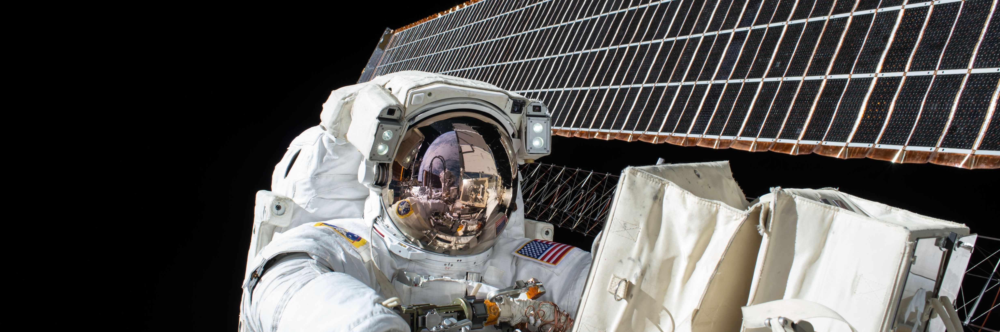

About
Hasup LEE, Ph.D.
(2014.07.16 ~ Now) Researcher
VR Lab, Dept. of Software, Konkuk University, Korea
Career
(2019.09.01 ~ 2022.08.31) Lecturer
College of Liberal Arts, Konkuk University, Korea
(2012.04.01 ~ 2013.03.31) Associate Professor
(2009.01.01 ~ 2012.03.31) Assistant Professor
(1997.04.30 ~ 2004.01.31) Technical Research Personnel
Dept. of CS, KAIST, Korea (as Military Service)
Education
(1997.03.01 ~ 2007.08.17) Ph.D.
(1995.03.01 ~ 1997.02.28) M.S.
(1990.03 ~ 1995.02) B.S.
Dept. of CS, KAIST
Contact
1019, New Engineering Bldg., Konkuk University
120, Neungdong-ro, Gwangjin-gu, Seoul, 05029, Korea
+82-2-455-4515
hasupsⓐmail.com
Activities
- 2016 ~ now
NIPA (National IT Industry Promotion Agency) - Evaluation Committee
- 2016 ~ now
IITP (Institude for Information & communications Technology Promotion) - Evaluation Committee
- 2020
HCI KOREA 2020 - Program Committee
- 2018
HCI KOREA 2018 - Program Committee
- 2017
VSMM2017 International Conference - Technical Program Committee
HCI KOREA 2017 - Program Committee
- 2016
VSMM2016 International Conference - Technical Program Committee
HCI KOREA 2016 - Program Committee
- 2015
DigitalHeritage2015 International Congress - Program Committee
ACDDEE2015 (Graphics/VR/Multimedia Workshop) - Program Committee
- 2014
VSMM2014 International Conference - Technical Program Committee
- 2013
DigitalHeritage2013 International Congress - Program Committee
- 2012
SIGGRAPH ASIA 2012 (Workshop) - Program Committee
VSMM2012 International Conference - Scientific Committee
ASIAGRAPH2012 International Conference - Program Committee
- 2011
ICCCT2011 International Conference - Program Committee
ISVRI2011 International Conference - Session Organizer
ASIAGRAPH2011 International Conference - Program Committee
- 2010
VRCAI2010 International Conference - Session Organizer, Program Committee
VSMM2010 International Conference - Program Committee
ASIAGRAPH2010 International Conference - Program Committee
- 2009
ASIAGRAPH2009 International Conference - Program Committee
Korea-Japan Metaverse Forum, Convergence Content Insight 2009 - Invited Speech (Theme: Metaverse) [video]
- 2008
Future UI Research Forum, Ubiu.Net Joint Seminar - Invited Speech (Theme: Augmented Reality)
Awards
- 2015 Korea Computer Congress 2015, Best Presentation Award
- 2005 The Fall Conference of Korea Multimedia Society, Best Paper Award
- 2005 Korea Sun Microsystems SunBrain Contest, StarSuite Tech. 1st Place Award
- 1994 National Computer Software Competition, 1st Place Award
Projects
| Projects |
Funds |
Period |
Cognitive-friendly interaction design to enhance human presence in virtual reality
(가상현실 속 인간의 현존감 제고를 위한 인지 친화적 인터랙션 디자인) |
Korea Ministry of Science and ICT |
2022/09 ~ |
Objective Analysis of Facial Bone CT Images Using Curvature Measurement
(안면골 골절 컴퓨터 단층촬영 영상에서 곡면의 곡률 계측을 통한 객관적 분석) |
Konkuk University |
2022/08 ~ |
3D Interactive Human Body Model Visualization for Multi-Component Multi-Target Effect Analysis
(MCMT 효능해석을 위한 3차원 대화형 인체모델 시각화 기술) |
Korea Ministry of Science and ICT |
2014/08 ~ 2022/08 |
Advanced Assessment System for Disorders of Consciousness after Acquired Brain Injury using Virtual Reality based Eye-tracking Technologies
(VR 기반 시선추적 기술을 활용한 후천적 뇌손상 이후의 의식장애 평가 시스템 고도화) |
National Rehabilitation Center |
2020/06 ~ 2020/11 |
Correlation Analysis between VR Motion Sickness and Eye Tracking Information
(VR 멀미와 시선추적 정보 간 상관성 분석 연구) |
Electronics and Telecommunications Research Institute |
2019/04 ~ 2019/11 |
VR/AR/MR based Simulation System & Contents Development for Medical Practice Using Haptic and Sensing Technology
(햅틱·센싱기능을 활용한 VR/AR/MR 기반 의학실습 시뮬레이션 시스템 및 콘텐츠 기술개발) |
Korea Ministry of Science and ICT |
2017/08 ~ 2017/12 |
Gamification-based VR/AR/MR Medical Education Contents Production for Improving Know-how
(Gamification 기반의 의료현장 노하우 제고 VR/AR/MR 의학교육 콘텐츠 제작) |
Korea Ministry of Science and ICT |
2017/08 ~ 2017/12 |
Next-Generation Surgical Navigation Solution Based on Multi-Modal Sensors and Mixed Reality for Arthroplasty
(인공관절치환술을 위한 다중센서 및 MR 기반 차세대 수술 항법 솔루션 개발) |
Institute of Advanced Convergence Technology (IACT, Korea) |
2017/08 ~ 2017/12 |
User Centric Adaptation Methods for Services in Multiple-Input Multiple-Output Environment
(MIMO 환경에서의 사용자의 의도와 상황을 고려한 HCI 정보 변환 기술) |
Korea Ministry of Science and ICT |
2014/08 ~ 2017/06 |
| Computer Vision based User Interface |
Japan Society for the Promotion of Science |
2011/04 ~ 2013/03 |
| Digital Museum Project |
Japan Ministry of Education, Culture, Sports, Science and Technology |
2010/04 ~ 2011/03 |
| Video Avatar Project |
Japan Society for the Promotion of Science |
2009/04 ~ 2013/03 |
| Archiving Great East Japan Earthquake with Ambiance |
Japan Society for the Promotion of Science |
2009/04 ~ 2013/03 |
| Augmented Reality Technology |
Korea Science and Engineering Foundation |
2000/08 ~ 2002/02 |
| Systems for Recognizing and Synthesizing of Facial Expression and Gesture |
Korea Ministry of Science and Technology |
1998/11 ~ 2000/11 |
| Mesh Optimization Technology for 3D Object Representation |
Korea System Engineering Research Institute |
1997/03 ~ 1997/11 |
| Intelligent HRI System Development |
Korea Science and Engineering Foundation |
1996/03 ~ 1997/02 |
| Development of Test Bed and Telerobotics Technology for HRI |
Korea Science and Engineering Foundation |
1995/03 ~ 1996/02 |
Publications
Journal paper
- Bin Jun, Sun young Lim, Hasup Lee, Yong woo Yi, Jee-In Kim and HyungSeok Kim, "Designing of Virtual Reality Experimental Environments using Multiple High-Resolution Display Devices", Submitted.
- BoYu Gao, HyungSeok Kim, Hasup Lee, Jooyoung Lee and Jee-In Kim, "Effects of Continuous Auditory Feedback on Drawing Trajectory-Based Finger Gestures", IEEE Transactions on Human-Machine Systems (ISSN: 2168-2291), Vol.48, No.6, pp.658-669, December 2018. [pdf] (SCIE)
- Hasup Lee, "VR Devices and Ubiquitous VR (가상 현실 장비와 유비쿼터스 가상 현실)", Information and Communications Magazine (ISSN: 1226-4725), Vol.33, No.12, pp.63-73, November 2016. [pdf] (UCI: I410-ECN-0101-2017-567-001948279)
- Hasup Lee, HyungSeok Kim and Jee-In Kim, "Background Subtraction Using Background Sets With Image- and Color-Space Reduction", IEEE Transactions on Multimedia (ISSN: 1520-9210), Vol.18, No.10, pp.2093-2103, October 2016. [pdf] (SCIE)
- Wonjun Seong, BoYu Gao, Jooyoung Lee, Hasup Lee, HyungSeok Kim and Jee-In Kim, "Effect of Faster Update Rate on Interaction Accuracy (빠른 갱신속도의 변화가 상호작용 정확도에 미치는 영향에 관한 연구)", KIISE Transactions on Computing Practices (ISSN: 2383-6318), Vol.22, No.3, pp.157-162, March 2016. [pdf] (KCI)
- Hasup Lee, Yoshisuke Tateyama and Tetsuro Ogi, "Real-time Background Subtraction for Video Avatar", International Journal of Future Computer and Communication (ISSN: 2010-3751), Vol.2, No.1, pp.41-43, February 2013. [pdf]
- Hasup Lee, Yoshisuke Tateyama and Tetsuro Ogi, "Virtual Reality Contents using Real Image based Techniques", International Journal of Information Processing and Management (ISSN: 2093-4009), Vol.4, No.1, pp.10-14, January 2013. [pdf] (Scopus)
- Hasup Lee, Yoshisuke Tateyama and Tetsuro Ogi, "Motion Templates based User Interface for Immersive Virtual Reality Environment", International Journal of Control and Automation (ISSN: 2005-4297), Vol.5, No.4, pp.113-116, December 2012. [pdf] (Scopus)
- Hasup Lee, Yoshisuke Tateyama, Tetsuro Ogi, Teiichi Nishioka, Takuro Kayahara and Kenichi Shinoda, "Interactive Exhibition with Ambience using Video Avatar and Animation on Huge Screen", The 14th International Conference on Human-Computer Interaction (HCII 2011), LNCS (Virtual and Mixed Reality - Systems and Applications) (ISSN: 0302-9743), Vol.6774, pp.253-259, July 2011. [pdf] (Scopus)
- Hasup Lee and Hyun S. Yang, "Marching-Cube-and-Octree-Based Level-of-Detail Modelling of 3D Objects", International Journal of Modelling and Simulation (ISSN: 0228-6203), Vol.29, No.2, pp.121-126, February 2009. [pdf] (Scopus)
- Hasup Lee and Hyun S. Yang, "Wavelet-Based Level-Of-Detail Representation of 3D Objects (웨이브릿 기반의 3차원 물체 LOD 표현)", Journal of KIISE: Computer Systems and Theory (ISSN: 1229-683X), Vol.29, No.3-4, pp.185-191, April 2002. [pdf] (KCI)
International conference
- Hasup Lee, HyungSeok Kim and Jee-In Kim, "Correction of Projector Distortion for Spatial Mixed Reality System", Computer Graphics International 2017 (CGI'17), June 2017. [pdf]
- Jooyoung Lee, HyungSeok Kim, BoYu Gao, Hasup Lee, Jee-In Kim and Mingyu Lim, "Synchronized Context Sharing over Multiple Devices: Personalized Rendering of Multimodal Contents", 3rd International Conference on Big Data and Smart Computing (BigComp2016), pp.365-369, January 2016. [pdf]
- BoYu Gao, HyungSeok Kim, Hasup Lee, Jooyoung Lee and Jee-In Kim, "Use of Sound to Provide Occluded Visual Information in Touch Gestural Interface", ACM CHI 2015, pp.1277-1282, April 2015. [pdf]
- Jooyoung Lee, Hasup Lee, BoYu Gao, Jee-In Kim and HyungSeok Kim, "Multiple Devices as Windows for Virtual Environment", IEEE VR 2015, pp.219-220, March 2015. [pdf]
- Kenichiro Ito, Yoshisuke Tateyama, Hasup Lee, Hidekazu Nishimura and Tetsuro Ogi, "Development of Head-Up Display for Motorcycle Navigation System", 2013 Asia-Pacific Council on Systems Engineering (APCOSEC 2013), September 2013. [pdf]
- Kenichiro Ito, Yoshisuke Tateyama, Hasup Lee, Hidekazu Nishimura and Tetsuro Ogi, "Information Presentation Using Head-Up Display for Motorcycle Rider", ASIAGRAPH 2013 Forum in Hawai'i, pp.107-108, April 2013. [pdf]
- Hao Lu, Tetsuro Ogi, Yoshisuke Tateyama and Hasup Lee, “Interface Design of Virtual Touch Panel for Handicapped People”, 2012 Asian Conference on Design and Digital Engineering (ACDDE 2012), December 2012. [pdf]
- Tetsuro Ogi, Hasup Lee, Yuki Ishiyama and Yosuke Kubota, “High Presence Digital Archive of Disaster Experience”, 2012 Seventh International Conference on P2P, Parallel, Grid, Cloud and Internet Computing (3PGCIC 2012)/MWVRTA 2012, pp.245-249, November 2012. [DOI] (Scopus)
- Hasup Lee, Yoshisuke Tateyama and Tetsuro Ogi, "Real Image based Virtual Reality Contents Generation", 8th International Conference on Information Science and Digital Content Technology (ICIDT 2012), pp.542-545, June 2012. [pdf] (Scopus)
- Tetsuro Ogi, Hasup Lee, Yoshisuke Tateyama, Yu Sakuma, Hideaki Kuzuoka and Nobuyuki Kukimoto, "Tiled Display Communication Using Multiple Fish-Eye Cameras", Proceedings of 2012 Design Engineering Workshop (DEWS 2012), pp.93-94, June 2012.
- Susumu Mizuguchi, Hasup Lee, Yoshisuke Tateyama and Tetsuro Ogi, "Deterioration Assessment of In-Car Lithium-Ion Battery by Visual Data Mining using Running Data from Electric Vehicles", ASIAGRAPH Forum 2012 in Tokyo, pp.59-62, March 2012.
- Hasup Lee, Yoshisuke Tateyama and Tetsuro Ogi, "Research on Image-based Virtual Reality", ASIAGRAPH Forum 2012 in Tokyo, pp.27-28, March 2012.
- Hasup Lee, Yoshisuke Tateyama and Tetsuro Ogi, "Hand Gesture Recognition using Blob Detection for Immersive Projection Display System", ICECECE 2012 : International Conference on Electrical, Computer, Electronics and Communication Engineering, WASET, Vol.62, pp.180-183, February 2012. [pdf]
- Hasup Lee, Yoshisuke Tateyama and Tetsuro Ogi, "Presentation of the Great East Japan Earthquake with Ambience using CAVE", ASIAGRAPH 2011 in Tokyo, pp.22-25, October 2011.
- Hasup Lee, Yoshisuke Tateyama and Tetsuro Ogi, "Unaffected User Interface for CAVE using Motion Templates Method", The 3rd International Conference on Advanced Science and Technology (AST 2011), CCIS (Advanced Computer Science and Information Technology), Vol.195, pp.46-49, September 2011. [DOI] (Scopus)
- Hasup Lee, Yoshisuke Tateyama and Tetsuro Ogi, "Image-based Stereo Background Modeling for CAVE System", IEEE International Symposium on VR innovation (ISVRI 2011), pp.251-254, March 2011. [DOI] (Scopus)
- Tetsuro Ogi, Yoshisuke Tateyama, Hasup Lee, Daisuke Furuyama, Takeharu Seno and Takuro Kayahara, "Creation of Three Dimensional Dome Contents Using Layered Images", IEEE International Symposium on VR innovation (ISVRI 2011), pp.255-260, March 2011. [DOI] (Scopus)
- Hasup Lee, Yoshisuke Tateyama and Tetsuro Ogi, "Panoramic Stereo Representation for Immersive Projection Display System", The 9th ACM SIGGRAPH Conference on Virtual-Reality Continuum and its Applications in Industry (VRCAI 2010), pp.379-382, December 2010. [DOI] (Scopus)
- Kaori Sukenobe, Yoshisuke Tateyama, Hasup Lee, Tetsuro Ogi, Teiichi Nishioka and Takuro Kayahara, "Effective Contents Creation for Spatial AR Exhibition", The 9th ACM SIGGRAPH Conference on Virtual-Reality Continuum and its Applications in Industry (VRCAI 2010), pp.383-389, December 2010. [DOI] (Scopus)
- Hasup Lee, Yoshisuke Tateyama and Tetsuro Ogi, "Realistic Visual Environment for Immersive Projection Display System", The 16th International Conference on Virtual Systems and Multimedia (VSMM 2010), pp.128-132, October 2010. [DOI] (Scopus)
- Kaori Sukenobe, Yoshisuke Tateyama, Hasup Lee, Tetsuro Ogi, Teiichi Nishioka, Takuro Kayahara, Kenichi Shinoda and Kota Saito, "Spatial AR Exhibition of Sican Mask", ASIAGRAPH 2010 in Tokyo, pp.122, October 2010.
- Hasup Lee, Yoshisuke Tateyama, Tetsuro Ogi, Teiichi Nishioka, Takuro Kayahara and Kenichi Shinoda, "Video Avatar System for Interactive Exhibition using Huge Screen Projection", ASIAGRAPH 2010 in Shanghai, Vol.4, No.1, pp.225-226, June 2010.
- Kaori Sukenobe, Yoshisuke Tateyama, Hasup Lee, Tetsuro Ogi, Teiichi Nishioka, Takuro Kayahara and Kenichi Shinoda, "Exhibition of Ancient Relics Using a Spatial Augmented Reality Technology", ASIAGRAPH 2010 in Shanghai, Vol.4, No.1, pp.223-224, June 2010.
- Tetsuro Ogi, Yoshisuke Tateyama, Hasup Lee, Kaori Sukenobe, Teiichi Nishioka, Takuro Kayahara and Kenichi Shinda,"Spatial Augmented Reality Technology Applied to Museum Exhibition", ASIAGRAPH 2010 in Shanghai, Vol.4, No.1, pp.65-70, June 2010.
- Hasup Lee, Yunsop Han, Yoshisuke Tateyama and Tetsuro Ogi, "Realistic Visual Environment for Immersive Projection Display System", RAVE-10, March 2010.
- Hasup Lee, Yunsop Han, Yoshisuke Tateyama and Tetsuro Ogi, "Image Based Panorama Representation for Immersive Projection Display System", ASIAGRAPH 2009 in Tokyo, Vol.3, No.1, pp.25-28, October 2009.
- Hasup Lee and Hyun S. Yang, "Surface Level-Of-Detail Modeling of 3D Objects Using Marching-Cube Octree", 19th Annual Conference on Computer Animation and Social Agents (CASA 2006), July 2006.
- Hasup Lee and Hyun S. Yang, "Real-time Marching-cube-based Surface Modeling of 3D Objects", The 14th International Conference on Artificial Reality and Telexistence (ICAT 2004), pp.235-240, December 2004.
- Hasup Lee, Juho Lee and Hyun S. Yang, "Real-time LOD: Marching-cube-and-octree-based 3D Object Level-of-detail Modeling", The 8th International Conference on Virtual Systems and Multimedia (VSMM 2002), pp.634-643, September 2002.
Domestic conference
- Hasup Lee, HyungSeok Kim, Jooyoung Lee, BoYu Gao and Jee-In Kim, "Ubiquitous Virtual Reality using Multiple Devices", HCI KOREA 2016, pp. 608-610, January 2016. [pdf]
- Jooyoung Lee, HyungSeok Kim, BoYu Gao, Hasup Lee, Jee-In Kim and Mingyu Lim, "Designing Multimedia Service Platform Based on MIMO Environment", HCI KOREA 2016, pp.278-282, January 2016. [DOI]
- Wonjun Seong, BoYu Gao, Jooyoung Lee, Hasup Lee, HyungSeok Kim and Jee-In Kim, "Effect of Update Rate on Interaction Accuracy", Korea Computer Congress 2015, pp.1348-1350, June 2015. [pdf]
- Yuki Ishiyama, Tetsuro Ogi, Yoshisuke Tateyama, Hasup Lee and Hiroaki Diago, "Research on Dome Contents Creation Technique based on Video Image", VRSJ the 17th Annual Conference, pp.243-244, September 2012.
- Hasup Lee, Yoshisuke Tateyama and Tetsuro Ogi, "Vision based user interface for CAVE system", VRSJ the 17th Annual Conference, pp.169-170, September 2012.
- Yuki Ishiyama, Hiroaki Diago, Yoshisuke Tateyama, Hasup Lee, Tetsuro Ogi and Takuro Kayahara, "Effective Spatial Video Contents in Dome Environment", the 15th Tele-Immersion Technology Committee, November 2011.
- Yu Sakuma, Hasup Lee, Yoshisuke Tateyama, Tetsuro Ogi, Nobuyuki Kukimoto and Hideaki Kuzuoka, "Tiled Display Communication with Space Sensation using Fish-eye Camera", VRSJ the 16th Annual Conference, pp.89-90, September 2011.
- Kaori Sukenobe, Yoshisuke Tateyama, Hasup Lee, Tetsuro Ogi,Teiichi Nishioka, Takuro Kayahara and Kenichi Shinoda, "Study on effective color overlapping for spatial augmented reality exhibition", VRSJ the 15th Annual Conference, pp.106-109, September 2010.
- Hasup Lee, Tetsuro Ogi, Yoshisuke Tateyama and Yunsop Han, "Panoramic Image Representation for Immersive Projection Display System", VRSJ the 14th Annual Conference, 2B3-7, September 2009.
- Hasup Lee and Hyun S. Yang, "Level-of-detail Modeling of 3D Objects using Marching-cube", 2005 The Fall Conference of Korea Multimedia Society, November 2005.
- Hasup Lee and Hyun S. Yang, "Level-Of-Detail Modeling of 3D Objects Constructed from Range Images", The 14th Workshop on Image Processing and Image Understanding (IPIU 2002), pp 425-430, 2002.
- Byeong-Soon Ryu, Hasup Lee, Hyun S. Yang, Kiho Kim and Youn G. Chung, "Wavelet-based Level-of-Detail Representation of 3D Object Constructed from Multiple Range Data", The 10th Workshop on Image Processing and Understanding (IPIU 1998), pp 267-272, 1998.
- Ki-Ho Kim, Howang-Bin Ryou, Hasup Lee and Youn-Gu Jung, "A Basic Design to the Development of 3D Object Generation System", Korea Computer Graphics ‘97, pp 51-62, 1997.
Thesis
- Hasup Lee, "Efficient Level-of-Detail Model Generation of 3D Objects using Prioritized Marching Cube Octree", Ph.D. thesis, Dept. of CS, KAIST, Korea, 2007. [pdf]
- Hasup Lee, "Distance Exhibition System using the Telerobotics Technique on World Wide Web (웹상에서의 Telerobotics 기술을 이용한 원격 전시 시스템)", M.S. thesis, Dept. of CS, KAIST, Korea, 1997. [pdf]
Article
- Hasup Lee, "VR/AR Hardware, Interface Tech Trends (VR/AR 하드웨어, 인터페이스 최신 기술 동향)", IITP Weekly Tech Trends, No.2002, pp.2-14, 20210623. [pdf]
- Hasup Lee, "VR, AR Tech Trends (VR, AR 최신 기술 동향)", KCA ICT Industry HOT CLIPS, No.57, pp.5-10, 20201126. [pdf]
- Hasup Lee, "VR, AR Tech Trends (VR, AR 최신 기술 동향)", IITP Weekly Tech Trends, No.1965, pp.2-12, 20200923. [pdf]
Book
- Hasup Lee, "Alt+X Series CGI Programing (Alt-X 시리즈 CGI 프로그래밍)", SeongAnDang, 1996. (ISBN 89-315-4400-6)
Patent
- Hasup Lee and Hyun S. Yang, "Method for 3D object level of detail modeling (3차원 물체 상세화 모델링 방법)", No. 1004390870000, Korea, June 2004.
Research

Areas of specialty
- Virtual reality
VR sickness, Eye tracking, Medical VR, Spatial VR, Cinematic VR, AR, Metaverse
- Computer vision
Background subtraction, Gesture recognition, Range image
- Computer graphics
3D object creation, Optimization, Level-of-detail modeling